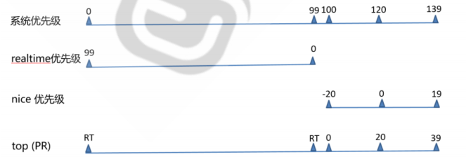

Linux进程和内存概念
进程
基本概念
进程是一个具有一定独立功能的程序在一个数据集上的一次动态执行的过程，是操作系统进行资源分配和调度的一个独立单位，是应用程序运行的载体。进程是一种抽象的概念，从来没有统一的标准定义。进程一般由程序、数据集合和进程控制块三部分组成。
简单地理解：运行一个程序，其代码和相关数据被操作系统加载到内存当中，占用系统资源，就可以视为一个进程。
进程的结构如下图，进程由内存空间和线程组成。
主要状态
优先级
CPU资源是有限的，因此需要针对进程运行进行优先级管理，设置运行次序。
以数字表示优先级，系统优先级中数字越小优先级越高，实时优先级数字越大优先级越高，nice值越小优先级越高

相关工具
pstree 可以用来显示进程的父子关系，以树形结构显示
ps 即 process state，可以进程当前状态的快照，默认显示当前终端中的进程，Linux系统各进程的相
关信息均保存在/proc/PID目录下的各文件中。 显示的进程状态为当前瞬时状态，有些进程状态可能不断变化。
renice命令可以调整正在执行中的进程的优先级
top 查看动态变化的实时进程状态
内存
基本概念
内存是用于存放CPU运算数据的存储器。CPU在运行进程时，需要访问内存，但CPU并不是直接访问物理内存地址，而是通过虚拟地址空间来间接访问到物理内存。操作系统通过在虚拟地址和物理地址之间建立映射关系，来让CPU可以间接访问到物理地址。程序在访问一个内存地址指向的内存时,CPU不是直接把这个地址送到内存总线上,而是被送到MMU（Memory Management Unit),然后把这个内存地址映射到实际的物理内存地址上，然后通过总线再去访问内存，程序操作的地址称为虚拟内存地址。
其中：被用作虚拟内存的磁盘空间就被称为交换空间；通过将虚拟地址空间以512Byte~8K的大小作为一个单位，这个单位就被称为页；将物理地址按照和页同样的大小作为一个单位，这个单位就被称为页框；操作系统通过维护一张表，这张表记录每一对页和页框的映射关系，这张表就被称为页表。访问虚拟地址时，计算机通过页表找到对应的实际物理地址访问。
进程使用内存问题
内存泄漏Memory Leak：指程序中用malloc或new申请了一块内存，但是没有用free或delete将内存释放，导致这块内存一直处于占用状态。
内存溢出Memory Overflow：某个程序申请的内存空间中写入了超过空间容量的数据
内存不足OOM：说明内存已快被耗尽，此时系统会随机挑选进程将其结束。
相关工具
free 可以显示内存空间使用状态
pmap显示进程对应的内存映射
vmstat显示虚拟内存信息
本博客所有文章除特别声明外，均采用 CC BY-SA 4.0 协议 ，转载请注明出处！